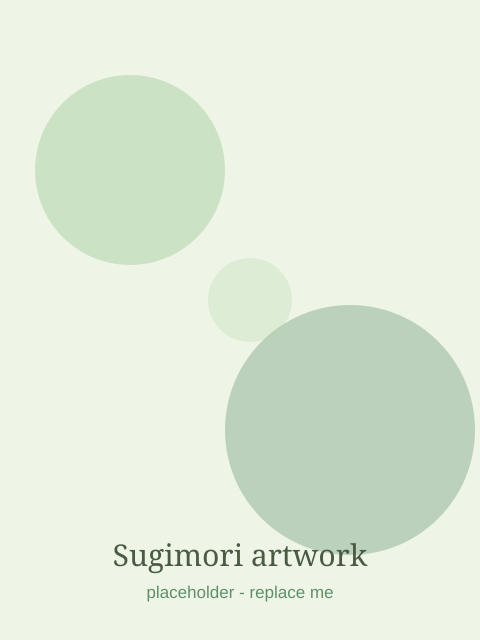

The Original 151

Bulbasaur
Seed Pokémon · 1996
About the artist
Ken S
- Born
- 1966, Takarazuka, Hyōgo, Japan
- Role
- Character designer & art director, GAME FREAK
- This era
- Pokémon Red & Green, 1996 — the original 151
- Why it matters
- The soft watercolor palette set the whole series' visual identity